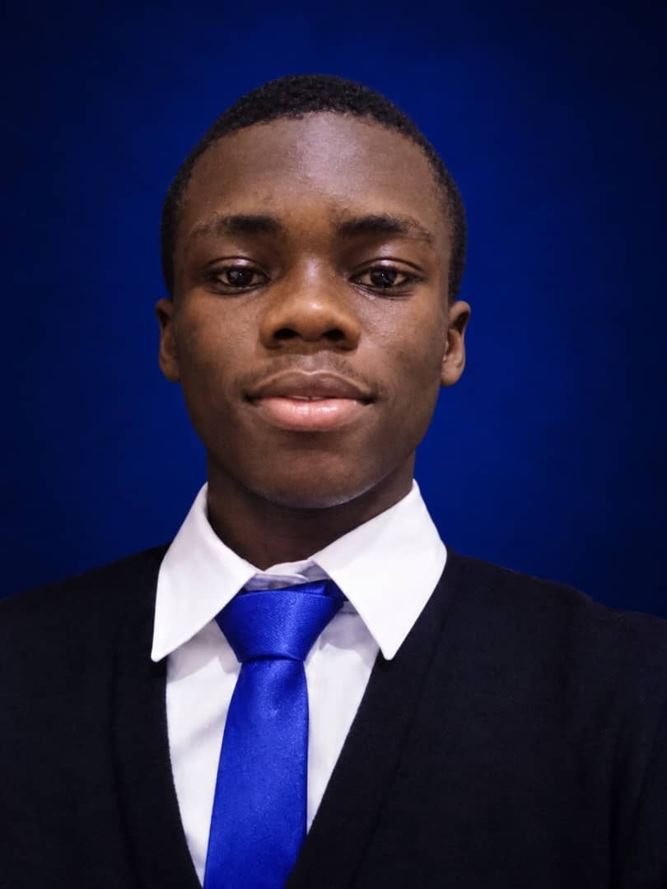

01
Front-End Development
Learning to build responsive, useful web pages with HTML, CSS, and JavaScript.
CODE / BUILDLEARNING • BUILDING • CREATING
Front-End Developer / Web Designer / Tech Enthusiast
I’m a young Nigerian tech learner exploring code, data, digital creativity, gaming, and the possibilities of AI. I’m building my skills one project at a time.

01 / A LITTLE ABOUT ME
I’m Royal Godswisdom Nta, a 16-year-old from Nigeria with a growing passion for technology and creativity.
I’m currently building my foundation in tech. I enjoy learning by trying things out, making small projects, and figuring out how digital tools can solve everyday problems. I mainly work from my phone, so I’m learning to make the most of the tools available to me.
Get to know my journey ↗02 / WHAT I DO
I’m at the learning stage, building experience across these creative and technical areas.
Learning to build responsive, useful web pages with HTML, CSS, and JavaScript.
CODE / BUILDExploring layouts, colors, typography, and user-friendly website experiences.
DESIGN / EXPERIENCEDeveloping my ability to organize information, understand patterns, and communicate insights.
DATA / INSIGHTSLearning how digital platforms and online presence can help businesses reach people.
BUSINESS / REACHA Free Fire player interested in movement, gameplay mechanics, and gaming communities.
PLAY / PRACTICEExploring how to create engaging gaming and digital content and develop my own style.
CREATE / SHARELearning how artificial intelligence and automation can support creativity, simplify tasks, and help turn ideas into practical projects.
EXPLORE / INNOVATE03 / MY JOURNEY
I’m about a year into my tech journey. I don’t claim to know everything—I’m here to learn, practice, improve, and keep creating.
My goal is to grow into a skilled developer and innovator while exploring the many ways technology and creativity can work together.
Read my full article ↗LET'S CONNECT THROUGH IDEAS
Visit my personal article to read the full story behind my interests, projects, and vision.
Read the article ↗